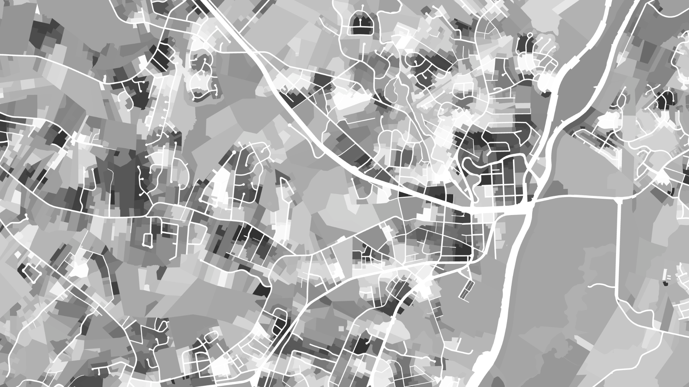

After a wildfire tears through a landscape, the window for reforestation is narrow. An organization contracting with DroneSeed needed to find candidate parcels fast — the right ownership type, the right tree cover loss, inside the fire boundary. Their process for doing that was slow and manual. I embedded with their geospatial team for six months and rebuilt it from scratch.
When a wildfire ends, the clock starts. Native tree cover that burned needs to be replanted before invasive species take hold. The window is measured in weeks, not years. An organization working with DroneSeed on post-fire reforestation needed to identify candidate parcels quickly after each fire event: parcels inside the fire perimeter, with significant tree cover loss, that were privately owned and reachable for outreach.
Their existing process for finding those parcels was slow, manual, and had to be rebuilt from scratch for each new fire. I was brought in to fix that.
I embedded with their geospatial team for six months — not as a consultant who showed up with a proposal, but as a working member of the team. I learned their data sources, their workflows, their constraints. What fire boundary data they had access to. How they obtained land ownership records. What the field crews actually needed on a candidate list before they could begin outreach.
The problem wasn't that the data didn't exist. It was that pulling it together required a GIS analyst to manually run the same set of operations for every new fire — and that process took time the mission didn't have.

A lot of consulting engagements produce a deliverable and leave. This one was different — six months embedded with the team meant I understood the operational reality, not just the stated requirements. I saw what broke. I saw what the field crews actually asked for. I understood the data limitations well enough to design around them rather than pretend they didn't exist.
The tool that came out of that time wasn't built to spec — it was built to survive contact with the real workflow. That's a different kind of product.
Before: a GIS analyst spent days pulling together the same analysis for each new fire. After: the team ran the tool, got a ranked candidate list, and handed it to the outreach team the same day. The speed improvement wasn't the main thing — the repeatability was. The organization could now respond to new fire events with a consistent, reliable process instead of rebuilding from scratch each time.
The documentation and knowledge transfer ensured the team could adapt the tool as their work evolved — new data sources, new fire geographies, new parameters. They owned it.